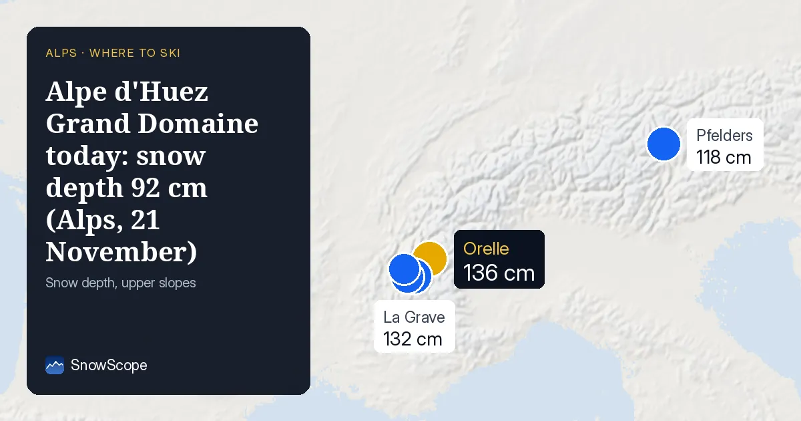

Alpe d'Huez Grand Domaine today: snow depth 92 cm (Alps, 21 November)
Alps snow report, 21 November. Our model ranks Orelle (France) first in the Alps today, with about 136 cm on its upper slopes, ahead of La Grave (132 cm) and Pfelders (118 cm). The snow map in the Alps shows 87,520 km² of white ground today and snow at 971 of 1,204 resorts. Our depth values come from a model checked against stations and satellite images; a few centimetres either way is normal error.
See the live snow forecast for Alpe d'Huez Grand Domaine in the SnowScope appSnow depth, powder alerts and the 3D map, free.
Depth today, by the numbers
Snow-covered area: 80,890 km² on 19 November, 87,520 km² today, 117,270 km² forecast for 24 November. The trend is up, for now.
Three heights at Orelle, three numbers: 104 cm at the top (3,221 m), 61 cm at mid-mountain (2,779 m), 36 cm at the base (2,338 m).
| Resort | Snow depth | New snow, 72 h | Coming, next days | Top |
|---|---|---|---|---|
| Orelle | 136 cm | 105 cm | 88 cm | 3,221 m |
| La Grave | 132 cm | 92 cm | 90 cm | 3,543 m |
| Pfelders | 118 cm | 15 cm | 11 cm | 2,500 m |
| Les Deux Alpes | 102 cm | 64 cm | 72 cm | 3,511 m |
| Alpe d'Huez Grand Domaine | 92 cm | 84 cm | 89 cm | 3,306 m |

Ground truth
The Weißseespitze station (3,499 m) adds a real measurement: 352 cm on the ground on 20 November. Ground check, Donin du Jour station (2,385 m): 106 cm on the ground on 20 November, 33 cm new in 24 hours. The Trubelboden station (2,459 m) adds a real measurement: 90 cm on the ground on 20 November, 26 cm new in 24 hours.
Small print that matters: resort values are model estimates for an area, stations measure a single point.
Versus past winters
Near average at Orelle: 49 cm at 2,779 m, deeper than in 17 of the past 46 winters on this date (usual: 64 cm).
La Grave, 3,369 m: 39 cm today, usual 80 cm. Late. Only 10 of the past 46 winters had less snow on 21 November.
The forecast in short
More snow ahead: 90 cm at La Grave, 89 cm at Alpe d'Huez Grand Domaine and 88 cm at Orelle by 24 November, if the forecast holds.
The freezing level at Orelle reaches 2,500 m to 2,780 m on 22 November, cutting the resort in two: wet snow below, wintry above.
Forecasts a few days ahead can change: look at the map again the day before you travel.
Tips for skiers
- Snow on the map does not mean a resort is open: check lifts and opening dates on the resort's website.
- Early-season snow is thin. Stay on open, groomed pistes: rocks and grass can hide just under the surface.
- Satellite images show it every winter: snow stays longest high up and on north-facing slopes, and goes first on south-facing ones.
- Before you ski off-piste or go touring, read the official avalanche bulletin (links below).
- Get a powder alert in the SnowScope app to know when Orelle gets fresh snow.
About these numbers
Resort snow depths are the deepest snow on the resort's upper slopes from the SnowScope snow model (about 1 km, run of 21 November); they are estimates for an area, not a measurement at one point. Station values are measurements on the date shown. Forecasts can change. Always read the official avalanche bulletin before going off-piste.
Official avalanche bulletins: Météo-France BERA
Cite this report
For research, teaching or the press: the numbers and charts are free to reuse under CC BY 4.0 with this citation.
SnowScope (2026), Alpe d'Huez Grand Domaine today: snow depth 92 cm (Alps, 21 November), https://snowscope.app/blog/en/2026/11/alps-alpe-d-huez-grand-domaine-snow-depth-today-21-november-2026.html, accessed 2026-11-21
SnowScope (Atlas Labs). (2026, November 21). Alpe d'Huez Grand Domaine today: snow depth 92 cm (Alps, 21 November). SnowScope snow reports. https://snowscope.app/blog/en/2026/11/alps-alpe-d-huez-grand-domaine-snow-depth-today-21-november-2026.html
BibTeX
@misc{snowscope2026alpsalpedhuezgranddomain,
author = {{SnowScope (Atlas Labs)}},
title = {Alpe d'Huez Grand Domaine today: snow depth 92 cm (Alps, 21 November)},
year = {2026},
month = nov,
howpublished = {\url{https://snowscope.app/blog/en/2026/11/alps-alpe-d-huez-grand-domaine-snow-depth-today-21-november-2026.html}},
note = {Published 2026-11-21 11:24 UTC; accessed 2026-11-21}
}· CC BY 4.0 · Methods, data and tools →
Alpe d'Huez Grand Domaine: snow and temperature by height, this winter vs last (tools) →
Follow Alpe d'Huez Grand Domaine
Free: a message when fresh snow is coming, and the forecast every morning.
More snow reports

Glacier skiing from 68 EUR a day: we compared seven glaciers in France, Austria, Germany and Switzerland by price and by the snow they usually hold in December.

We rank French ski resorts by December snow odds and checked pass prices, starting from 36.00 EUR for an adult day pass in Les Karellis.

Ten European ski resorts ranked for December value, led by Les 2 Alpes with 75 cm of mid-mountain snow.